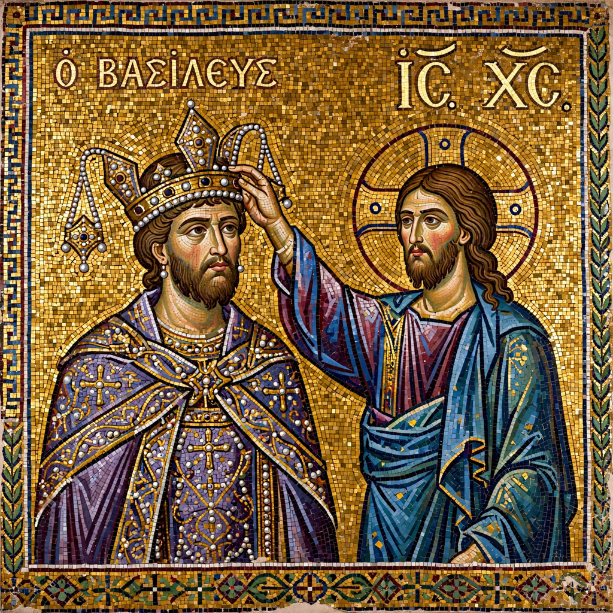

| King of Sicily | 1130 – 1154 |
|---|---|
| Predecessor | County of Sicily (as count, 1105–1130) |
| Successor | William I |
| Born | 22 December 1095, Mileto, Calabria |
| Died | 26 February 1154, Palermo |
| House | Hauteville |
| Father | Roger I of Sicily |
| Mother | Adelaide del Vasto |
Roger II (22 December 1095 – 26 February 1154) was an Italo-Norman king, the founder and first king of the Kingdom of Sicily, reigning from 1130 until his death. The younger son of Count Roger I, he succeeded his brother Simon as Count of Sicily in 1105, under the regency of his mother Adelaide. During his reign the county was elevated to a kingdom uniting Sicily with the Norman territories of southern Italy, and Sicily became one of the wealthiest and most culturally vibrant states of the Mediterranean world.
Roger was born at Mileto in Calabria. His father died in 1101 and his brother Simon in 1105, leaving the young Roger as count under his mother's regency. Adelaide moved the court to Palermo, where Roger was educated among Greek, Latin and Arabic speakers. He assumed personal rule around 1112.
After the death of his cousin Duke William II of Apulia in 1127, Roger claimed the duchy and, despite papal opposition, secured recognition. In 1130 the antipope Anacletus II granted him a royal crown, and Roger was crowned King of Sicily at Palermo on Christmas Day 1130. Years of campaigning against rebellious mainland barons and a coalition including Pope Innocent II followed; victory at Rignano and the capture of the Pope at Galluccio in 1139 forced recognition of his kingship by the Treaty of Mignano.
Roger's court at Palermo fused Norman, Byzantine and Arab institutions. He maintained an efficient central administration staffed by Greek and Arab officials — notably his admiral George of Antioch — issued the Assizes of Ariano (c. 1140), one of the earliest royal law codes of medieval Europe, and governed a population of Latin Christians, Greek Christians, Muslims and Jews with unusual pragmatism. In 1154 his court geographer Muhammad al-Idrisi completed the Tabula Rogeriana, the most advanced world map of the Middle Ages. Roger's coronation mantle, embroidered with Arabic inscription in Palermo's royal workshop, survives in Vienna.
Roger's fleets conquered the coast of Ifriqiya (modern Tunisia and Libya), including Tripoli (1146) and Mahdia (1148), creating a short-lived Norman "Kingdom of Africa". In 1147 his admiral George sacked Thebes and Corinth in Byzantine Greece, carrying off silk workers to Palermo.
Roger died at Palermo on 26 February 1154 and was buried in Palermo Cathedral in a porphyry sarcophagus. He was succeeded by his son William I, "the Bad"; the kingdom he founded endured until 1194, when it passed to the Hohenstaufen.